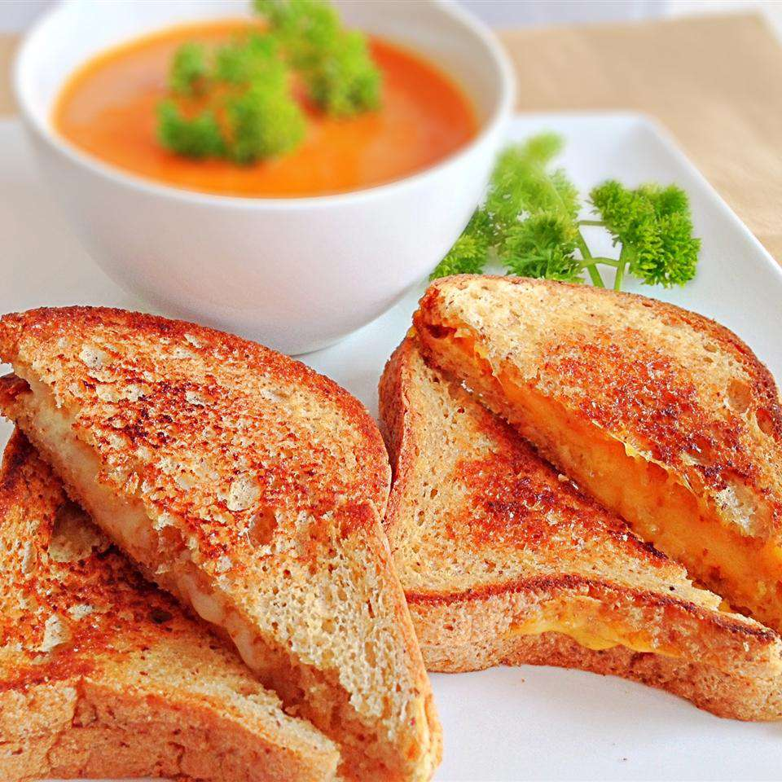

Grilled Cheese Sandwich Recipe

What is Grilled Cheese Sandwich?
A grilled cheese sandwich is made by placing a cheese filling, often cheddar or American cheese, between two slices of bread, which is then heated until the bread browns and the cheese melts. A layer of butter or mayonnaise may be added to the outside of the bread for additional flavor and texture.
Ingredients:
- 4 slices white bread
- 3 tablespoons butter, divided
- 2 slices Cheddar cheese
Steps:
- Preheat a nonstick skillet over medium heat. Generously butter one side of a slice of bread. Place bread butter-side down in the hot skillet; add 1 slice of cheese. Butter a second slice of bread on one side and place butter-side up on top of cheese.
- Cook until lightly browned on one side; flip over and continue cooking until cheese is melted. Repeat with remaining 2 slices of bread, butter, and slice of cheese.